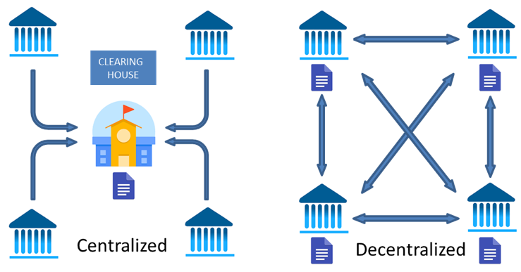

Ο δημιουργός του Bitcoin όπως αναφέρεται και στο Whitepaper είναι κάποιος, αυτοαποκαλούμενος ως Satoshi Nakamoto. Το συγκεκριμένο όνομα αποτελεί ένα ψευδώνυμο καθώς δεν γνωρίζουμε μέχρι και σήμερα ποιος είναι ο άνθρωπος ή η ομάδα που κρύβεται πίσω από αυτό. Η τελευταία επικοινωνία του Satoshi με το community ήταν το 2011. Οι 3 επικρατέστεροι υποψήφιοι (σύμφωνα με το Internet) πίσω από το ψευδώνυμο του Satoshi Nakamoto, είναι ο Dorian Nakamoto, ο Craig Wright και ο Nick Szabo.

Το Bitcoin είναι το πρώτο αποκεντρωμένο ψηφιακό νόμισμα στην ανθρώπινη ιστορία. Όλες οι συναλλαγές με Bitcoin καταγράφονται σε ένα κοινό ψηφιακό μητρώο, το λεγόμενο BlockChain (το οποίο έχεις σίγουρα ακούσει εάν έχεις ασχοληθεί με το bitcoin για πάνω από μερικά λεπτά) το οποίο είναι ελεύθερα προσβάσιμο από τον καθένα. Το Bitcoin σου δίνει πλήρη έλεγχο πάνω στα χρήματα σου σε αντίθεση με τα παραδοσιακά χρήματα τα οποία ελέγχονται και “τυπώνονται” από κεντρικές τράπεζες.
Πρώτη φορά στην ιστορία, μετά την εμφάνιση του ψηφιακού χρήματος, υπάρχει μία εναλλακτική στο παραδοσιακό νομισματικό
σύστημα.
Αυτό που κάνει το Bitcoin να ξεχωρίζει είναι πως αποτελεί μια μορφή χρήματος η οποία δεν ελέγχεται από μια ανώτερη
αρμόδια αρχή αλλά υπάρχει και λειτουργεί ανεξάρτητα και αυτόνομα.
Με τον ίδιο τρόπο που το Internet ήρθε να φέρει την αποκέντρωση της πληροφορίας, το Bitcoin μπορεί να αποτελέσει την
αποκέντρωση του χρήματος!
Ο καθένας μπορεί να στείλει ή να λάβει πληρωμές από μόνος του, χωρίς την ύπαρξη κάποιου μεσάζοντα και με χαμηλό κόστος μεταφοράς.
Πολλές φορές τα συμφέροντα της κεντρικής αρχής που εκδίδει το χρήμα δεν συμβαδίζουν με τα συμφέροντα της πλειοψηφίας του κόσμου. Ένα τέτοιο παράδειγμα είναι η έκδοση χρήματος για την σωτηρία κάποιου χρηματοπιστωτικού ιδρύματος (πχ μιας τράπεζας ή μιας ιδιωτικής εταιρείας). Η έκδοση μεγάλης ποσότητας χρήματος έχει ως αποτέλεσμα την αύξηση του πληθωρισμού το οποίο σημαίνει πως η αγοραστική δύναμη των καταναλωτών μειώνεται.
Η δύναμη οδηγεί σε διαφθορά. Η πολύ δύναμη οδηγεί σε μεγάλη διαφθορά! Όταν κάποιος έχει την δυνατότητα να δημιουργήσει χρήμα, δηλαδή το μέσο με το οποίο ανταλλάσσουμε την αξία ελέγχει πρακτικά τον κόσμο.
Πρακτικά, το παραστατικό χρήμα καθιστά τις τράπεζες και το κράτος τον απόλυτο και πραγματικό ελεγκτής των χρημάτων σου. Μπορεί οποιαδήποτε ώρα και στη στιγμή κρίνει αυτό, να επέμβει και να δεσμεύσει τα χρήματα σου ή να σου αρνηθεί την πρόσβαση σε αυτά.
Στις 15 Μαρτίου 2013, μετά τη συνεδρίαση του Eurogroup για την πολιτική απόφαση που θα έπρεπε να παρθεί για την Κύπρο και το πρόγραμμα διάσωσης, αποφασίστηκε κούρεμα καταθέσεων 6,5% μέχρι τις €100.000 και 9,5% για τις καταθέσεις από τις €100.000 και άνω σε ολόκληρο το τραπεζικό σύστημα. Τον Ιούνιο 2015 καθιερώθηκαν στην Ελλάδα Capital Controls για να προλάβουν μια πλήρη κατάρρευση του ελληνικού τραπεζικού συστήματος από ένα ανεξέλεγκτο bank run. Ως καταθέτης, περιοριζόσουν σε ένα όριο ημερήσιας ανάληψης μετρητών που έφτανε τα 60 Ευρώ ενώ δεν μπορούσες καν να στείλεις κεφάλαια σε λογαριασμούς του εξωτερικού.
Και αυτά ήταν παραδείγματα τα οποία αφορούσαν ολόκληρα κράτη, φαντάσου ποιο είναι το μέγεθος της εξουσίας που έχουν σε μεμονωμένους τραπεζικούς λογαριασμούς πολιτών.
Όπως είδαμε και στην αρχή, το Bitcoin αποτελεί ένα ψηφιακό νόμισμα το οποίο βασίζεται στην τεχνολογία του Blockchain. Με απλά λόγια, το Blockchain αποτελεί ενός είδους βάση δεδομένων. Σε αυτή τη βάση δεδομένων είναι καταγεγραμμένα, κάθε στιγμή, όλα τα διαθέσιμα υπόλοιπα σε Bitcoin καθώς και όλες οι συναλλαγές που λαμβάνουν χώρα. Η διαφορά με μια κλασική βάση δεδομένων είναι ότι στο Blockchain τα δεδομένα αποθηκεύονται ανάμεσα σε πολλούς διαφορετικούς ηλεκτρονικούς υπολογιστές και όχι μονάχα σε ένα, κεντρικό server. Τα δεδομένα αποθηκεύονται με την μορφή blocks τα οποία συνδέονται στην σειρά, το ένα μετά το άλλο. Ακριβώς όπως μια αλυσίδα.
Το δίκτυο του Bitcoin λειτουργεί και αναπτύσσεται μέσα από συνεχείς updates της συγκεκριμένης βάσης δεδομένων τα οποία περιλαμβάνουν όλες τις συναλλαγές που λαμβάνουν χώρα. Κάθε υπολογιστής που συμμετέχει στο δίκτυο (Bitcoin Node) διατηρεί ένα αντίγραφο του blockchain και επιβεβαιώνει την κάθε συναλλαγή που πραγματοποιείται σε αυτό. Κάθε φορά που “ανακοινώνεται” μια νέα συναλλαγή bitcoin όλοι όσοι συμμετέχουν στο δίκτυο θα πρέπει να ανανεώσουν το αντίγραφο του Blockchain που διατηρούν ώστε να βρίσκονται στο ίδιο μήκος κύματος. Και αυτός ακριβώς είναι ο λόγος που το Bitcoin δεν μπορεί να χακαριστεί. Για να γίνει αποδεκτή οποιαδήποτε προσθήκη νέας πληροφορίας στο σύστημα, θα πρέπει να επιβεβαιωθεί από τους υπολογιστές που συμμετέχουν στο δίκτυο και διατηρούν το αντίγραφο του Blockchain.
